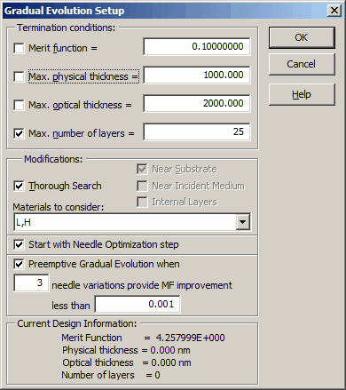
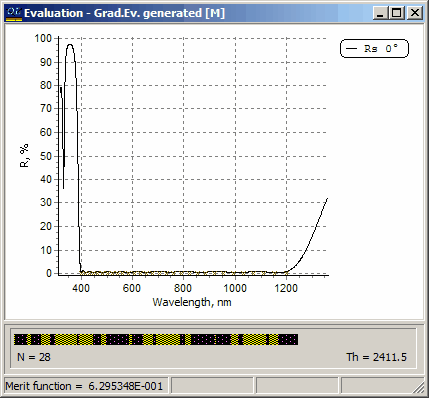
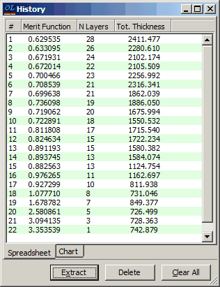
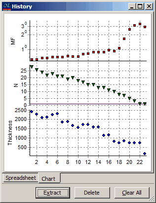

Exercise 14. Gradual Evolution
Exercise 14. Gradual Evolution
Optimization procedures provided by OptiLayer enable a wide range of synthesis strategies for solving complicated design problems. Accumulating experience with the program will allow you to devise your own strategies. Exercises of this Section give you some basic ideas on how one can organize a synthesis procedure. This exercise also supplies some additional information on OptiLayer features.
Consider the design of wideband AR coatings for the spectral region from 400 to 1200nm. Necessary files are located in the Problem directory EX14. In SF Mode you need to use Import Problem Directory command (File Menu).
Load GLASS substrate, SIO2 and TIO2 layer materials to memory. Browse and load Ar-vnir target from the Target database. To design required AR coating we will not use any starting design at all.
Choose the Newton method (Analysis and Synthesis Options dialog). Go to the Synthesis menu and choose the Gradual Evolution command. The Gradual Evolution Setup window provides a choice of several termination conditions for the gradual evolution design process.

Limit the maximum number of layers by 25 and disable other termination conditions as shown in the figure. Press the OK button. The Gradual Evolution process starts running.
This process is a further development of the needle optimization procedure and you will be able to observe a sequence of needle optimization procedures at your screen. It also comprises a consecutive increase of the design total optical thickness which results in the obtaining not one but a sequence of designs with different combinations of major design parameters. These designs are accumulated in the History storage.
The Gradual Evolution process terminates as soon as an active termination condition is reached. In our case this happens when the number of design layers reaches 26. Note that it is possible that the last needle optimization procedure has not been yet completed at the termination moment. This last procedure will automatically proceed running in a few seconds unless you answer No when the termination prompt arrives at the screen. In our case the final design after the last needle optimization procedure will have 28 layers:

Note that this design as well as all intermediate designs stored in the History were obtained even without any starting design at all. It is important that in the course of Gradual Evolution intermediate designs have been stored in the History.
 
You can extract and investigate these designs using the Extract button in the History window. The History storage allows the designer to compare the quality of design performance expressed by the merit function value and the design complexity expressed by its number of layers and design total thickness and thus to choose the most practical design for manufacture.